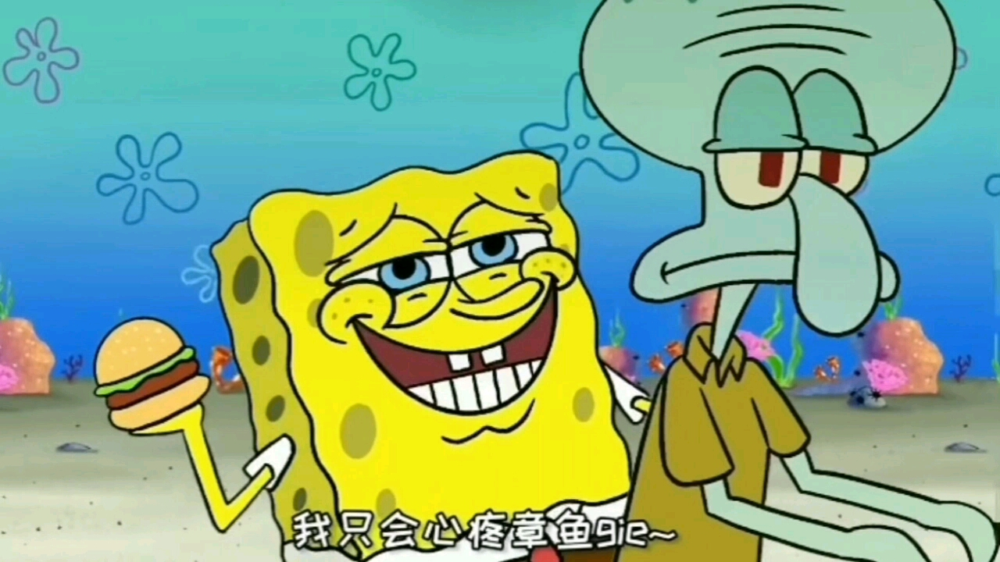
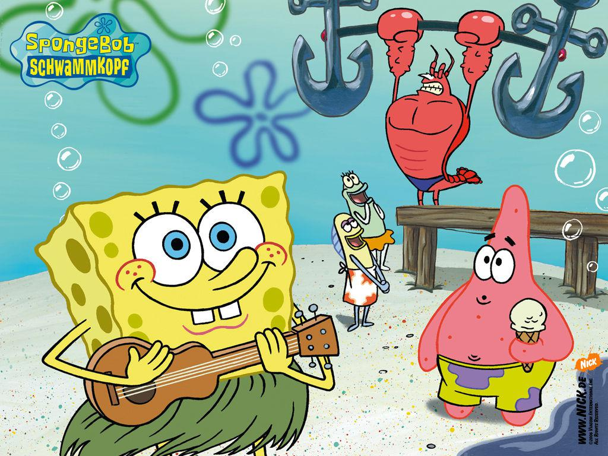

《海绵宝宝》（SpongeBob SquarePants）是一部由史蒂芬·海伦伯格原创，舍曼·科恩、沃特·杜赫、山姆·亨德森、保罗·蒂比特、沃尔特·道恩 [21]等导演，汤姆·肯尼、比尔·法格巴克、罗杰·布帕斯等配音的美国喜剧动画，于1999年7月17日在尼克国际儿童频道开播。
央视少儿频道从2006年1月29日大年初一晚20:00开始播出。《海绵宝宝》的故事情节主要围绕着主角海绵宝宝和他的好朋友派大星、邻居章鱼哥、上司蟹老板等生物展开，场景设定于太平洋海底，一座被称为比基尼海滩的城市。2005年1月30日，该片荣获第32届安妮奖授予的“最佳TV动画制作”奖 [1]。
这部动画除了固定描绘的卡通场景与人物之外，也会穿插一些真实的物件或人物：例如曾出演《海滩游侠》与《霹雳游侠》的大卫·哈塞尔霍夫，以本人的身份出演了几集。但海绵宝宝卡通的内容基本上与海洋知识无关，甚至夸大到完全不合乎科学与常识，例如海底生火、海底冲澡等，剧集内容也会时不时的嘲笑精致艺术和章鱼哥的劳工权益想法。
海绵宝宝是方块形的黄色海绵，住在比基尼海滩（裤头村、比奇堡）的一个菠萝里，他的宠物是一只会“猫~猫~”叫的海蜗牛小蜗，海绵宝宝喜欢捕捉水母，职业是蟹堡王（The Krusty Krab）里的头号厨师。派大星和珊迪都是他的朋友。海绵宝宝总是能给平静的世界制造麻烦，虽然闹出一些笑话，不过他总能摆脱困境，然后又制造出新的麻烦。
海绵宝宝要迎接一个重要的时刻的来临，那就是到蟹堡王餐馆去应聘。蟹堡王餐馆的蟹老板告诉海绵宝宝要想加入蟹堡王，就必须去找一个动力锅铲。海绵宝宝能找到动力锅铲吗？海绵宝宝认识了一个头戴空气头盔的松鼠珊迪，很快它们成为了好朋友。珊迪还邀请海绵宝宝到它的橡树屋去玩，在那里海绵宝宝会呼吸到很多新鲜空气。海绵宝宝会适应橡树屋的环境吗？精彩不容错过！
海绵宝宝做起了生意，它向大家销售起了泡泡。只要向海绵宝宝交两毛五分钱，就可以吃泡泡。派大星成为了它第一位顾客，海绵宝宝还交给它一套吹泡泡的技巧。海绵宝宝它们会吹出什么样的泡泡呢？请看海绵宝宝之泡泡店！ [140]
痞老板到蟹堡王来偷蟹黄堡的秘方，但它的计划没有成功。痞老板又打起了海绵宝宝的歪脑筋，它想通过海绵宝宝得到蟹黄堡的秘方。海绵宝宝会上当吗？赶快去看动画片吧！ [140]
海绵宝宝和派大星在章鱼哥的挑拨下反目成仇，章鱼哥又分别和派大星、海绵宝宝成为了朋友。海绵宝宝和派大星会一直这样误会下去吗？海绵宝宝要参加划船考试了，它顺利的通过了口语考试，但在进行上路考试时却出现了状况。海绵宝宝能通过路考吗？精彩不容错过！ [4]
蟹老板让章鱼哥和海绵宝宝一起去给顾客送匹萨外卖，章鱼哥让海绵宝宝开船，但它们迷路了。匹萨外卖能准时送到顾客手里吗？海绵宝宝的家被虫子吃掉了，没有了家的海绵宝宝该怎么办呢？赶快去看动画片吧！ [4]